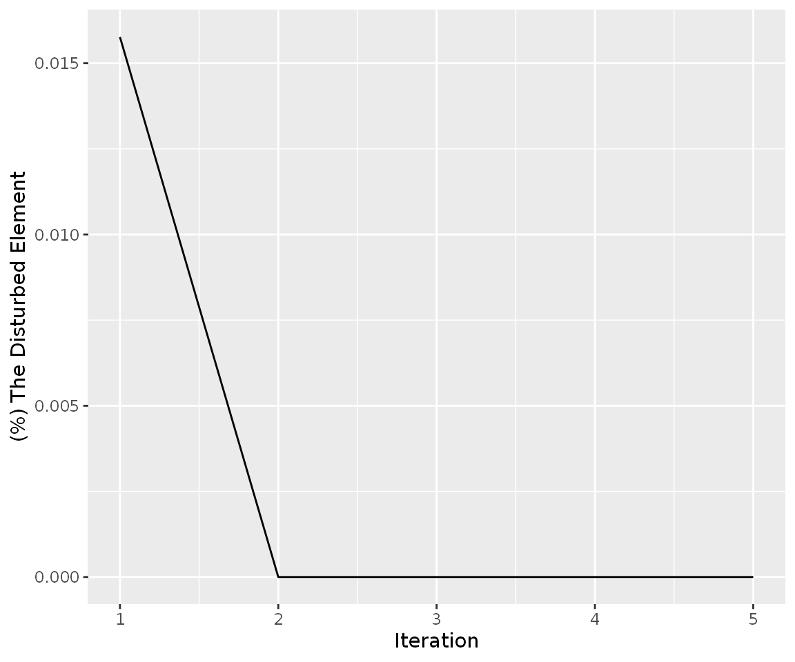

A TCGA dataset application
Selcen Ari
2019-11-25
Source:vignettes/mirtarbase_example.Rmd
mirtarbase_example.Rmd1. Introduction
This vignette is about the integration of gene and miRNA pairs and their expression dataset and analysis. The sample dataset in this demonstration, which contains human miRNA:target pairs, was retrieved from miRTarBase website (Release 7.0).
3. Integration of dataset which includes only miRNA and gene expression values
3.1. miRNA:target pairs
data("mirtarbasegene")
head(mirtarbasegene)
#> # A tibble: 6 x 2
#> miRNA Target
#> <chr> <chr>
#> 1 hsa-miR-20a-5p HIF1A
#> 2 hsa-miR-146a-5p CXCR4
#> 3 hsa-miR-122-5p CYP7A1
#> 4 hsa-miR-222-3p STAT5A
#> 5 hsa-miR-21-5p RASGRP1
#> 6 hsa-miR-148a-3p DNMT1NOTE if the mirna:target dataset includes miRNA genes as targets, the priming_graph() function can fail. Because, the function define to miRNAs and targets without distinguishing between uppercase or lowercase.
3.2. Gene expression in normal and tumor samples
The gene and mirna expression counts of patient barcoded with TCGA-E9-A1N5 is retrieved from TCGA via TCGAbiolinks package (Colaprico et al. 2015) from Bioconductor. The instructions of retrieving data can be found at TCGAbiolinks manual.
For this step you don’t have to use TCGA data, any other source or package can be utilized.
data("TCGA_E9_A1N5_normal")
head(TCGA_E9_A1N5_normal)
#> # A tibble: 6 x 7
#> patient sample barcode definition ensembl_gene_id external_gene_n…
#> <chr> <chr> <chr> <chr> <chr> <chr>
#> 1 TCGA-E… TCGA-… TCGA-E… Solid Tis… ENSG00000000003 TSPAN6
#> 2 TCGA-E… TCGA-… TCGA-E… Solid Tis… ENSG00000000005 TNMD
#> 3 TCGA-E… TCGA-… TCGA-E… Solid Tis… ENSG00000000419 DPM1
#> 4 TCGA-E… TCGA-… TCGA-E… Solid Tis… ENSG00000000457 SCYL3
#> 5 TCGA-E… TCGA-… TCGA-E… Solid Tis… ENSG00000000460 C1orf112
#> 6 TCGA-E… TCGA-… TCGA-E… Solid Tis… ENSG00000000938 FGR
#> # … with 1 more variable: gene_expression <dbl>data("TCGA_E9_A1N5_tumor")
head(TCGA_E9_A1N5_tumor)
#> # A tibble: 6 x 7
#> patient sample barcode definition ensembl_gene_id external_gene_n…
#> <chr> <chr> <chr> <chr> <chr> <chr>
#> 1 TCGA-E… TCGA-… TCGA-E… Primary s… ENSG00000000003 TSPAN6
#> 2 TCGA-E… TCGA-… TCGA-E… Primary s… ENSG00000000005 TNMD
#> 3 TCGA-E… TCGA-… TCGA-E… Primary s… ENSG00000000419 DPM1
#> 4 TCGA-E… TCGA-… TCGA-E… Primary s… ENSG00000000457 SCYL3
#> 5 TCGA-E… TCGA-… TCGA-E… Primary s… ENSG00000000460 C1orf112
#> 6 TCGA-E… TCGA-… TCGA-E… Primary s… ENSG00000000938 FGR
#> # … with 1 more variable: gene_expression <dbl>3.3. miRNA expression data
data("TCGA_E9_A1N5_mirnatumor")
head(TCGA_E9_A1N5_mirnatumor)
#> # A tibble: 6 x 6
#> barcode mirbase_ID miRNA Precusor total_read total_RPM
#> <chr> <chr> <chr> <chr> <int> <dbl>
#> 1 TCGA-E9-A1N5-01A-11R-… MIMAT0000062 hsa-let-7a-… MI00000… 45725 20802.
#> 2 TCGA-E9-A1N5-01A-11R-… MIMAT0004481 hsa-let-7a-… MI00000… 100 45.5
#> 3 TCGA-E9-A1N5-01A-11R-… MIMAT0010195 hsa-let-7a-… MI00000… 6 2.73
#> 4 TCGA-E9-A1N5-01A-11R-… MIMAT0000063 hsa-let-7b-… MI00000… 43489 19785.
#> 5 TCGA-E9-A1N5-01A-11R-… MIMAT0004482 hsa-let-7b-… MI00000… 126 57.3
#> 6 TCGA-E9-A1N5-01A-11R-… MIMAT0000064 hsa-let-7c-… MI00000… 2002 911.data("TCGA_E9_A1N5_mirnanormal")
head(TCGA_E9_A1N5_mirnanormal)
#> # A tibble: 6 x 6
#> barcode mirbase_ID miRNA Precusor total_read total_RPM
#> <chr> <chr> <chr> <chr> <int> <dbl>
#> 1 TCGA-E9-A1N5-11A-41R-… MIMAT0000062 hsa-let-7a-… MI00000… 67599 37068.
#> 2 TCGA-E9-A1N5-11A-41R-… MIMAT0004481 hsa-let-7a-… MI00000… 132 72.4
#> 3 TCGA-E9-A1N5-11A-41R-… MIMAT0010195 hsa-let-7a-… MI00000… 57 31.3
#> 4 TCGA-E9-A1N5-11A-41R-… MIMAT0000063 hsa-let-7b-… MI00000… 47266 25918.
#> 5 TCGA-E9-A1N5-11A-41R-… MIMAT0004482 hsa-let-7b-… MI00000… 126 69.1
#> 6 TCGA-E9-A1N5-11A-41R-… MIMAT0000064 hsa-let-7c-… MI00000… 14554 7981.Here’s the summary of size of each dataset
| Dataset name | Number of rows |
|---|---|
mirtarbasegene |
380627 |
TCGA_E9_A1N5_normal |
56830 |
TCGA_E9_A1N5_tumor |
56830 |
TCGA_E9_A1N5_mirnanormal |
750 |
TCGA_E9_A1N5_mirnatumor |
648 |
3.4. Integrating and analysing data
All of these datasets are integrated using the code below resulting in miRNA:target dataset that contains miRNA and gene expression values.
TCGA_E9_A1N5_mirnanormal %>%
inner_join(mirtarbasegene, by= "miRNA") %>%
inner_join(TCGA_E9_A1N5_normal,
by = c("Target"= "external_gene_name")) %>%
select(Target, miRNA, total_read, gene_expression) %>%
distinct() -> TCGA_E9_A1N5_mirnageneNote: Some of genes have expression values more than one because some of tissue samples were sequenced in two medium separately. So, we select maximum expression values of that genes at following:
#> # A tibble: 26 x 3
#> # Groups: Target, miRNA [26]
#> Target miRNA n
#> <chr> <chr> <int>
#> 1 COG8 hsa-miR-186-5p 2
#> 2 GOLGA8M hsa-miR-1270 2
#> 3 GOLGA8M hsa-miR-5703 2
#> 4 MATR3 hsa-let-7e-5p 2
#> 5 MATR3 hsa-miR-1-3p 2
#> 6 MATR3 hsa-miR-10b-3p 2
#> 7 MATR3 hsa-miR-125b-5p 2
#> 8 MATR3 hsa-miR-149-5p 2
#> 9 MATR3 hsa-miR-155-5p 2
#> 10 MATR3 hsa-miR-16-1-3p 2
#> # … with 16 more rowshead(TCGA_E9_A1N5_mirnagene)
#> # A tibble: 6 x 4
#> Target miRNA total_read gene_expression
#> <chr> <chr> <int> <dbl>
#> 1 CDK6 hsa-let-7a-5p 67599 4669
#> 2 MYC hsa-let-7a-5p 67599 11593
#> 3 BCL2 hsa-let-7a-5p 67599 2445
#> 4 NKIRAS2 hsa-let-7a-5p 67599 1519
#> 5 ITGB3 hsa-let-7a-5p 67599 196
#> 6 NF2 hsa-let-7a-5p 67599 1755When we compared the two gene expression dataset of TCGA-E9A1N5 patient, and selected a gene which has 30-fold increased expression, (gene name: HIST1H3H), this gene node will be used in the example. Note that the selected node must not be isolated one. If the an isolated node is selected the change in expression will not propagate in network. (You can see commands for node selection in the vignette The auxiliary commands which can help to the users)
Optionally, you can filter the low expressed gene nodes because they are not effective elements.
The analysis is performed based on amounts of miRNAs and targets as seen. Firstly, we tried to find optimal iteration for the network when simulation start with HIST1H3H node.
TCGA_E9_A1N5_mirnagene %>%
priming_graph(competing_count = gene_expression,
miRNA_count = total_read) %>%
update_how(node_name = "HIST1H3H", how =30) %>%
simulate(10) ->simulation_res_HIST
simulation_res_HIST%>%
find_iteration(plot=TRUE)
The graph was shown that the change in expression level of HIST1H3H results in weak perturbation efficiency, despite 30-fold change. The code shown below can be used for calculation of fold changes after simulation HIST1H3H gene to 30 fold:
simulation_res_HIST%>%
as_tibble()%>%
mutate(FC= count_current/initial_count)%>%
arrange(desc(FC))
#> # A tibble: 13,432 x 8
#> name type node_id initial_count count_pre count_current changes_variable
#> <chr> <chr> <int> <dbl> <dbl> <dbl> <chr>
#> 1 HIST… Comp… 9705 27 808. 808. Up
#> 2 KLHL… Comp… 618 579 579. 579. Up
#> 3 YWHAZ Comp… 393 15845 15845. 15845. Down
#> 4 SOCS1 Comp… 433 27 27.0 27.0 Up
#> 5 NNT Comp… 3404 1909 1909. 1909. Up
#> 6 PPIP… Comp… 7084 2342 2342. 2342. Up
#> 7 LYVE1 Comp… 11198 916 916. 916. Up
#> 8 IL10 Comp… 1639 13 13.0 13.0 Up
#> 9 L1CAM Comp… 2651 60 60.0 60.0 Down
#> 10 IFIT… Comp… 6030 1550 1550. 1550. Up
#> # … with 13,422 more rows, and 1 more variable: FC <dbl>And then, we tried to simulate the network with the gene which has higher expression value. For this, we selected ACTB node as shown in The auxiliary commands which can help to the users
simulation_res_ACTB <- TCGA_E9_A1N5_mirnagene %>%
priming_graph(competing_count = gene_expression,
miRNA_count = total_read) %>%
update_how(node_name = "ACTB", how =1.87) %>%
simulate(10)
simulation_res_ACTB%>%
find_iteration(plot=TRUE)
Following codes are shown entire gene fold changes after simulation ACTB gene to 1.87 fold:
simulation_res_ACTB%>%
as_tibble()%>%
mutate(FC= count_current/initial_count)%>%
arrange(desc(FC))
#> # A tibble: 13,432 x 8
#> name type node_id initial_count count_pre count_current changes_variable
#> <chr> <chr> <int> <dbl> <dbl> <dbl> <chr>
#> 1 ACTB Comp… 84 101917 183710. 183710. Up
#> 2 ADIP… Comp… 319 3015 3026. 3026. Up
#> 3 RRM2 Comp… 67 1479 1484. 1484. Up
#> 4 FAM1… Comp… 385 569 571. 571. Up
#> 5 YOD1 Comp… 472 470 472. 472. Up
#> 6 ZNF2… Comp… 302 1395 1400. 1400. Up
#> 7 DNAJ… Comp… 557 60 60.2 60.2 Up
#> 8 FXN Comp… 374 382 383. 383. Up
#> 9 NKIR… Comp… 4 1519 1524. 1524. Up
#> 10 NRAS Comp… 7 2311 2318. 2318. Up
#> # … with 13,422 more rows, and 1 more variable: FC <dbl>TCGA_E9_A1N5_mirnagene %>%
priming_graph(competing_count = gene_expression,
miRNA_count = total_read)%>%
calc_perturbation(node_name= "ACTB", cycle=10, how= 1.87,limit = 0.1)| perturbation_efficiency | perturbed_count |
|---|---|
| 0.015499 | 827 |
On the other hand, the perturbation eficiency of ATCB gene is higher, when this gene is regulated with 30-fold upregulation like in HIST1H3H.
TCGA_E9_A1N5_mirnagene %>%
priming_graph(competing_count = gene_expression,
miRNA_count = total_read)%>%
calc_perturbation(node_name= "ACTB", cycle=10, how= 30,limit = 0.1)| perturbation_efficiency | perturbed_count |
|---|---|
| 0.209515 | 3712 |
3.5. The sum of two conditions:
In a real biological sample, we tested perturbation efficiencies of two genes; * one with low expression but high fold change (HIST1H3H, 30-fold increase in tumor) * another one with high expression but small change in expression level (ACTB, 1.87-fold increase in tumor)
With these two samples, it has been obtained that expression values of genes, rest of the perturbed gene, changed slightly.
Despite high fold change, former gene caused little perturbation. When the perturbation efficiencies of both of these genes are analysed, it has been oberved that HIST1H3H does not affect the other genes in given limit. On the contrary, high expressing gene with very low fold increase in tumor causes greater perturbation in the network. Additionaly, the perturbation efficiency of ACTB gene is quite high from HIST1H3H with 30-fold change, when ACTB is simulated with 30 fold-change.
Thus, if the perturbed node has lower target:total target ratio in group or groups, the efficiency of it can be weak, or vice versa. The efficiency of ACTB gene may be high for this reason, in comparison with HIST1H3H perturbation. In fact, it has been observed that ACTB has not strong perturbation efficiency too. This could be arisen from low miRNA:target ratio or ineffective target nodes which have very low expression levels.
4. Dataset (huge_example) which includes miRNA and gene expressions and miRNA:target interaction factors
4.1. Description of the huge_example dataset
Interactions between miRNAs and their targets can be analyzed after the integration of miRNA and targets via various datasets. As an example, we prepared the huge_example dataset. It was generated by integrating:
- Next-generation RNA sequencing data of a breast cancer patient from TCGA (patient id:TCGA_A7_A0CE)
- The microRNA expression values of the same breast cancer patient.
- High-throughput miRNA:target determination datasets. We utilised the microRNA:target gene dataset which was integrated from high-throughput experimental studies(CLASH & CLEAR-CLiP methods). These datasets give exact microRNA:target pairs because of these methods base on chimeric reading of pairs after binding of microRNAs and their targets. For this reason, the datasets contain detailed information for microRNA:target pairs such as interacted bases (in terms of degree of complementarity) on microRNAs and target mRNAs, location of interaction region (seed) on mRNA and estimated binding energies of pairs.
Below, only 6 rows from total of 26,176 rows are shown.
data("huge_example")
head(huge_example)
#> competing miRNA competing_counts mirnaexpression_normal Energy
#> 1 TSPAN6 hsa-miR-484 5404 23.058807 -21.4
#> 2 DPM1 hsa-miR-18b-5p 2472 0.256209 -10.0
#> 3 SCYL3 hsa-miR-149-5p 1483 34.844420 -5.5
#> 4 SCYL3 hsa-miR-30a-5p 1483 63031.505507 -13.0
#> 5 C1orf112 hsa-miR-1296-5p 312 1.793463 -8.1
#> 6 CFH hsa-miR-17-5p 5760 89.929349 -17.2
#> region_effect seed_type_effect
#> 1 0.42 0.43
#> 2 0.84 0.01
#> 3 0.42 0.01
#> 4 0.84 0.43
#> 5 0.42 0.01
#> 6 0.42 0.014.2. Select a node as trigger
The node that initiates simulation can be determined according your interest or research.
The dataset, which is a data frame, can be manipulated with tidyverse packages. As an example, competing RNAs targeted by less than 5 miRNAs are eliminated to make the network manageable size.
huge_example %>%
add_count(competing) %>%
filter(n > 5) %>%
select(-n) -> filtered_example
head(filtered_example)
#> # A tibble: 6 x 7
#> competing miRNA competing_counts mirnaexpression… Energy region_effect
#> <chr> <chr> <dbl> <dbl> <dbl> <dbl>
#> 1 MAD1L1 hsa-… 1909 34.8 -18.6 0.42
#> 2 MAD1L1 hsa-… 1909 297. -19.3 0.01
#> 3 MAD1L1 hsa-… 1909 55.9 -15.4 0.01
#> 4 MAD1L1 hsa-… 1909 65.8 -13.6 0.42
#> 5 MAD1L1 hsa-… 1909 603. -26.7 0.01
#> 6 MAD1L1 hsa-… 1909 5113. -30.6 0.01
#> # … with 1 more variable: seed_type_effect <dbl>On the other hand, we chose the node GAPDH according to interaction count of the nodes. With the simulation, the graph was visualized after node GAPDH was increased to five fold.
filtered_example %>%
priming_graph(competing_count = competing_counts,
miRNA_count = mirnaexpression_normal,
aff_factor = Energy) %>%
update_how("GAPDH", 5) -> simulation_GAPDH
simulation_GAPDH%>%
vis_graph(title = "Distribution of GAPDH gene node")Let’s visualize each step of simulation via simulate_vis() function.
simulation_GAPDH%>%
simulate_vis(title = "GAPDH over expression in the real dataset", 3)
#> # A tbl_graph: 1526 nodes and 11384 edges
#> #
#> # A directed acyclic simple graph with 1 component
#> #
#> # Node Data: 1,526 x 7 (active)
#> name type node_id initial_count count_pre count_current changes_variable
#> <chr> <chr> <int> <dbl> <dbl> <dbl> <chr>
#> 1 MAD1L1 Compet… 1 1909 1909. 1909. Up
#> 2 TFPI Compet… 2 3377 3377. 3377. Down
#> 3 SLC7A2 Compet… 3 8706 8707. 8707. Down
#> 4 FKBP4 Compet… 4 20583 20584. 20584. Down
#> 5 SLC25A… Compet… 5 1637 1638. 1638. Down
#> 6 ST7 Compet… 6 1962 1962. 1962. Up
#> # … with 1,520 more rows
#> #
#> # Edge Data: 11,384 x 21
#> from to Competing_name miRNA_name competing_counts mirnaexpression… Energy
#> <int> <int> <chr> <chr> <dbl> <dbl> <dbl>
#> 1 1 1255 MAD1L1 hsa-miR-1… 1909 34.8 -18.6
#> 2 1 1256 MAD1L1 hsa-miR-1… 1909 297. -19.3
#> 3 1 1257 MAD1L1 hsa-miR-1… 1909 55.9 -15.4
#> # … with 1.138e+04 more rows, and 14 more variables: dummy <dbl>,
#> # afff_factor <dbl>, degg_factor <dbl>, comp_count_list <list>,
#> # comp_count_pre <dbl>, comp_count_current <dbl>, mirna_count_list <list>,
#> # mirna_count_pre <dbl>, mirna_count_current <dbl>,
#> # mirna_count_per_dep <dbl>, effect_current <dbl>, effect_pre <dbl>,
#> # effect_list <list>, mirna_count_per_comp <dbl>
GAPDH over expression in real dataset
Now, we can track changes in expression levels at every node for 3 cycles when GAPDH is overexpressed 5-fold.
After increase in GAPDH expression level in the first graph, the responses of the other competing elements to the GAPDH distributions were calculated.
The changing regulations (up or down) were observed as a result of interactions in the second graph.
When three graphs were carefully compared to each other, it can be observed that the expression levels of nodes change continuously at each stage.
5. Finding perturbation efficiency on an experimental dataset
find_node_perturbation() runs calc_perturb on all nodes in the network in parallel with help of the future and furrr packages. In this vignette, the function is demonstrated on the midsamp data. This dataset is not comparable to actual biological miRNA:target gene datasets in size and complexity. Although find_node_perturbation() runs in parallel it might take long time to run in real huge biological datasets.
In real biological datasets, more complex interactions whether functional or non-functional could be observed. We have improved our approach with fast argument in find_node_perturbation() based on selection of elements that could be affected from perturbation. In this fucntion, fast argument specifies the percentage of the competing amount that can be affected within the initial competing amount and acts as a selection parameter. For instance, in huge_example data:
filtered_example%>%
priming_graph(competing_count = competing_counts, miRNA_count = mirnaexpression_normal)%>%
find_node_perturbation(how=5, cycle=3, fast = 10)%>%
select(name, perturbation_efficiency, perturbed_count) -> entire_perturbation
#> Warning in priming_graph(., competing_count = competing_counts, miRNA_count = mirnaexpression_normal): First column is processed as competing and the second as miRNA.
#> Warning: `as_quosure()` requires an explicit environment as of rlang 0.3.0.
#> Please supply `env`.
#> This warning is displayed once per session.
#> Subsetting by edges
#> Warning: `cols` is now required.
#> Please use `cols = c(eff_count)`
entire_perturbation%>%
filter(!is.na(perturbation_efficiency), !is.na(perturbed_count))%>%
select(name, perturbation_efficiency, perturbed_count)
#> # A tibble: 223 x 3
#> name perturbation_efficiency perturbed_count
#> <chr> <dbl> <dbl>
#> 1 SLC25A5 0.320 207
#> 2 MSL3 0.0696 207
#> 3 MYCBP2 0.0695 205
#> 4 VPS41 0.0472 205
#> 5 ADIPOR2 0.175 207
#> 6 SCMH1 0.0879 207
#> 7 NR1H4 0.0000227 207
#> 8 RALBP1 0.156 207
#> 9 VCL 0.388 207
#> 10 CTNNA1 0.683 207
#> # … with 213 more rows6. Session Info
sessionInfo()
#> R Under development (unstable) (2019-11-23 r77455)
#> Platform: x86_64-pc-linux-gnu (64-bit)
#> Running under: Ubuntu 16.04.6 LTS
#>
#> Matrix products: default
#> BLAS: /home/travis/R-bin/lib/R/lib/libRblas.so
#> LAPACK: /home/travis/R-bin/lib/R/lib/libRlapack.so
#>
#> locale:
#> [1] LC_CTYPE=en_US.UTF-8 LC_NUMERIC=C
#> [3] LC_TIME=en_US.UTF-8 LC_COLLATE=en_US.UTF-8
#> [5] LC_MONETARY=en_US.UTF-8 LC_MESSAGES=en_US.UTF-8
#> [7] LC_PAPER=en_US.UTF-8 LC_NAME=C
#> [9] LC_ADDRESS=C LC_TELEPHONE=C
#> [11] LC_MEASUREMENT=en_US.UTF-8 LC_IDENTIFICATION=C
#>
#> attached base packages:
#> [1] stats graphics grDevices utils datasets methods base
#>
#> other attached packages:
#> [1] ceRNAnetsim_0.99.16 tidygraph_1.1.2 dplyr_0.8.3
#>
#> loaded via a namespace (and not attached):
#> [1] tidyselect_0.2.5 xfun_0.11 purrr_0.3.3 listenv_0.7.0
#> [5] graphlayouts_0.5.0 colorspace_1.4-1 vctrs_0.2.0 htmltools_0.4.0
#> [9] viridisLite_0.3.0 yaml_2.2.0 utf8_1.1.4 rlang_0.4.2
#> [13] pkgdown_1.4.1 pillar_1.4.2 glue_1.3.1 tweenr_1.0.1
#> [17] lifecycle_0.1.0 stringr_1.4.0 munsell_0.5.0 gtable_0.3.0
#> [21] future_1.15.0 codetools_0.2-16 memoise_1.1.0 evaluate_0.14
#> [25] labeling_0.3 knitr_1.26 parallel_4.0.0 fansi_0.4.0
#> [29] furrr_0.1.0 Rcpp_1.0.3 backports_1.1.5 scales_1.1.0
#> [33] desc_1.2.0 farver_2.0.1 fs_1.3.1 gridExtra_2.3
#> [37] ggforce_0.3.1 ggplot2_3.2.1 digest_0.6.23 stringi_1.4.3
#> [41] ggrepel_0.8.1 polyclip_1.10-0 rprojroot_1.3-2 grid_4.0.0
#> [45] cli_1.1.0 tools_4.0.0 magrittr_1.5 lazyeval_0.2.2
#> [49] tibble_2.1.3 ggraph_2.0.0 crayon_1.3.4 tidyr_1.0.0
#> [53] pkgconfig_2.0.3 zeallot_0.1.0 MASS_7.3-51.4 assertthat_0.2.1
#> [57] rmarkdown_1.15 viridis_0.5.1 R6_2.4.1 globals_0.12.4
#> [61] igraph_1.2.4.1 compiler_4.0.0